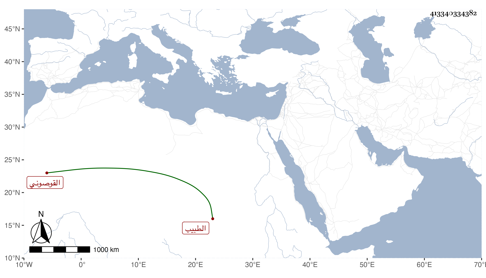

0902Sakhawi.DawLamic.ITO20230111-ara1.EIS1600.413340334382
Biography ID: 413340334382
309
محمد بن عبد الوهاب بن صدقة الشمس القوصوني الطبيب ابن الطبيب الماضي أبوه وابن أخت الجمال بن عبد الحق . ولد سنة أربع وثلاثين وثمانمائة ومات أبوه في التي تليها فنشأ فحفظ القرآن وغيره ، وتدرب في الصناعة وتميز فيها ودار على المرضى وتنزل في الجهات ثم ترقى إلى الرياسة وحمد الناس سكونه وأدبه وعقله وحسن علاجه وممن نوه به المظفر الأمشاطي ، وأنشأ دارا بالقرب من جامع الخطيري ثم احتاج لبيعها وكذا أنشأ بيتا برأس حارة زويلة بالقرب من الخرنفش .
